lab 3 Add a New File
Goals
- Learn how to add a new file to your local repo.
Create a “Hello, World” script 01
In the swd-directory create a new JavaScript file called hello.js, but DON'T add it to the local repo just yet.
Execute:
Create a new JavaScript File:
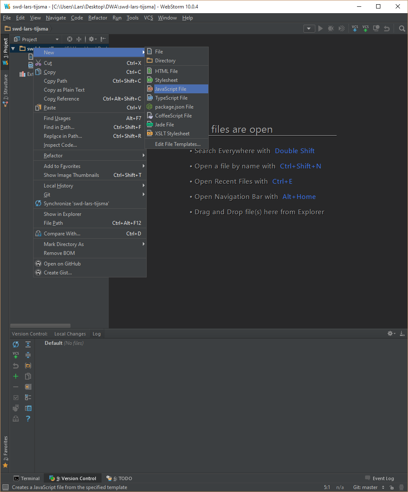Use the name "hello". Because you've selected JavaScript file the extension, WebStorm will add the .js extension.
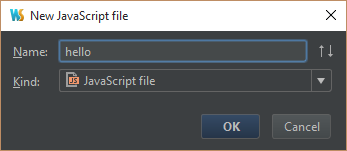Choose No, to prevent WebStorm from adding it to your local repo.
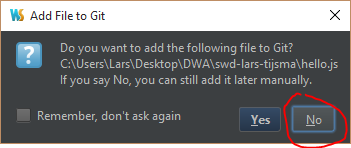File: hello.js
'use strict';
console.log('Hello, World');
Output:
You should see:
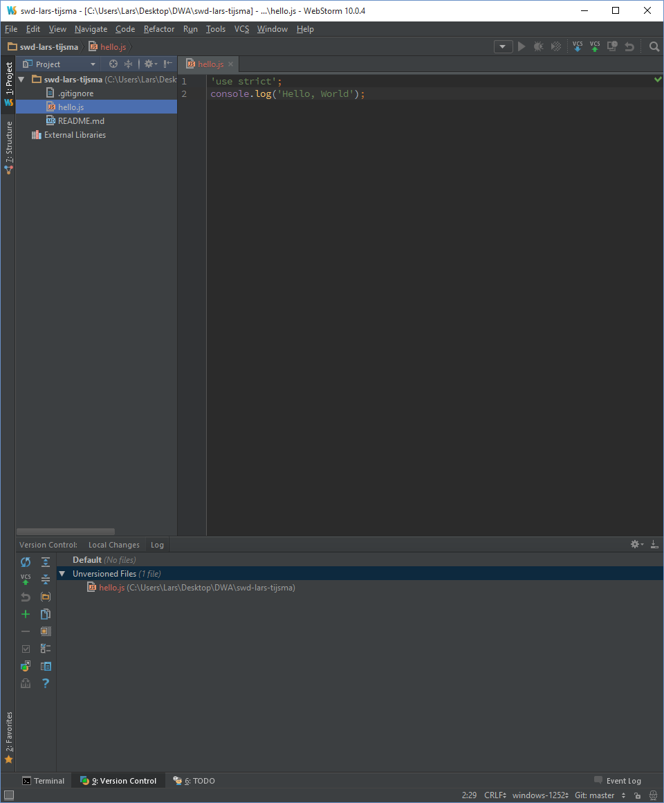Try to commit the script 02
If you try to commit your changes nothing will happen, because git doesn't consider your file to be part of your local repo.
Execute:
Right Click on the file in the Version Control window and select "Commit Changes".
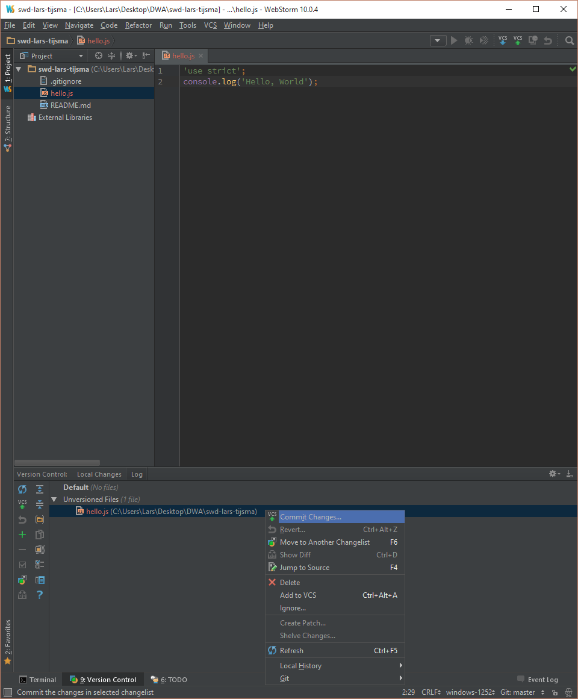Output:
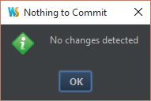Add the script to the local repo 03
You'll first need to add the script to the local repo. This instructs git to place it on the "staging area"
Execute:
Right Click on the file in the Version Control window and select "Add to VCS".
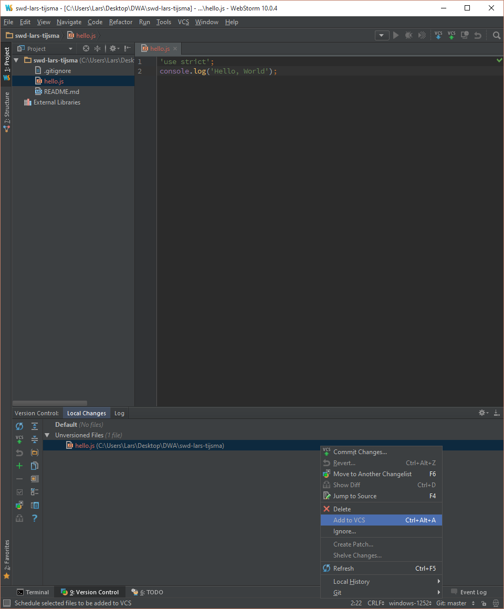Output:
You should see:
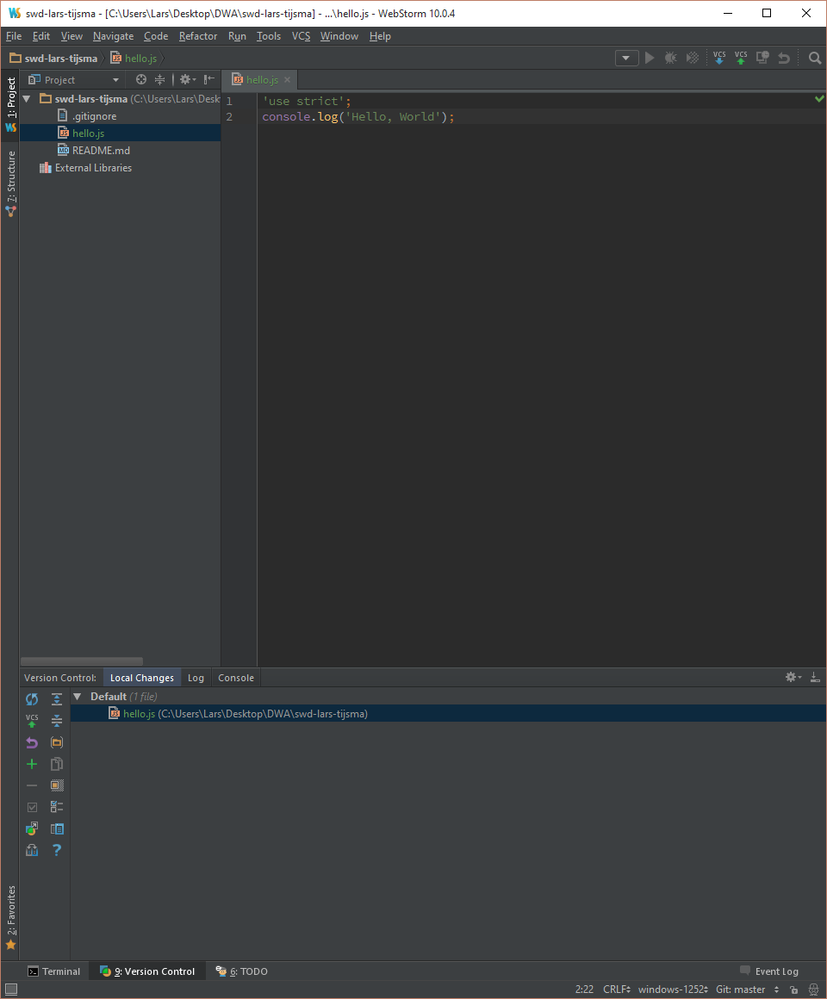Commit the script to your local repo 04
Now you should be able to commit the script. Git will move the script from the staging area to a new snapshot of your project.
Execute:
Right Click on the file in the Version Control window and select "Commit Changes".
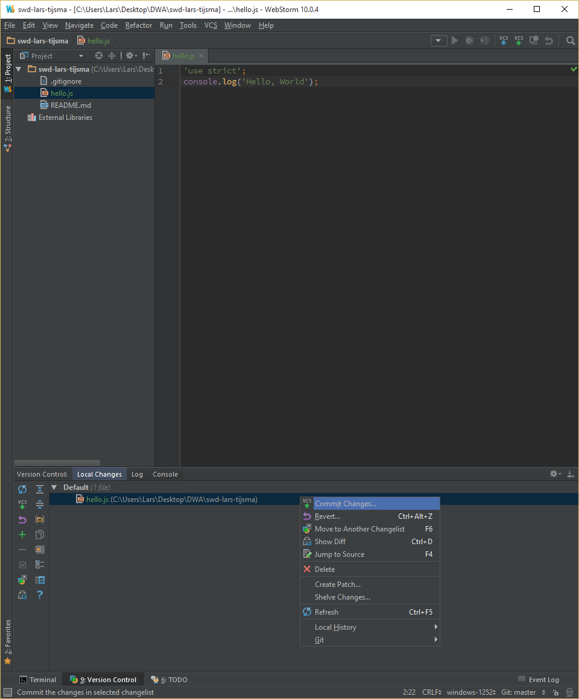Add a comment and uncheck all checkboxes. Press commit and select the first option: "commit".
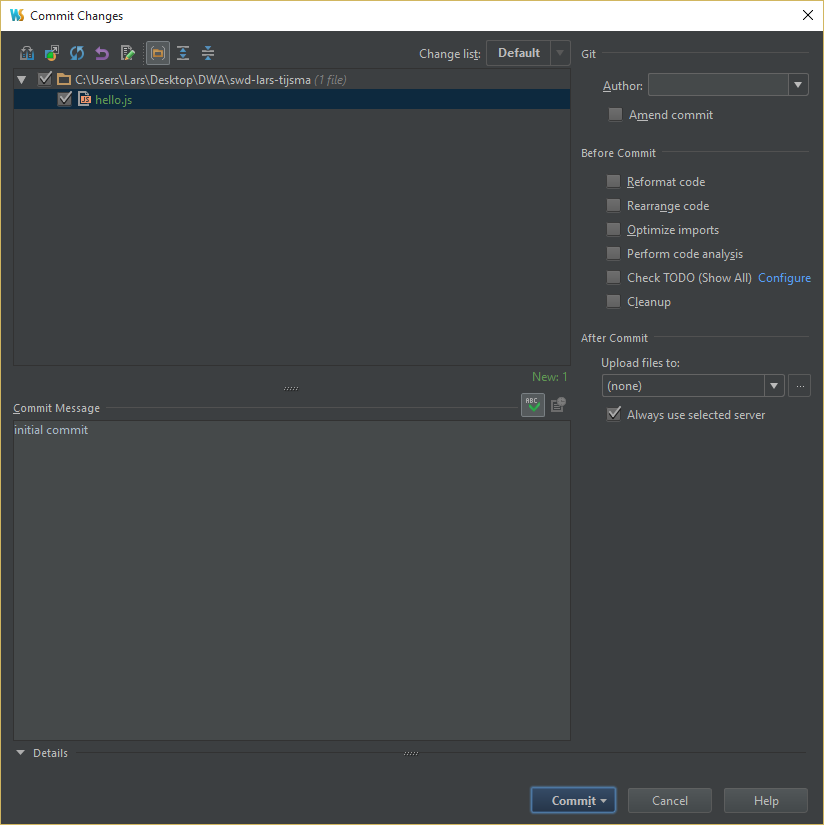Output:
You should see:
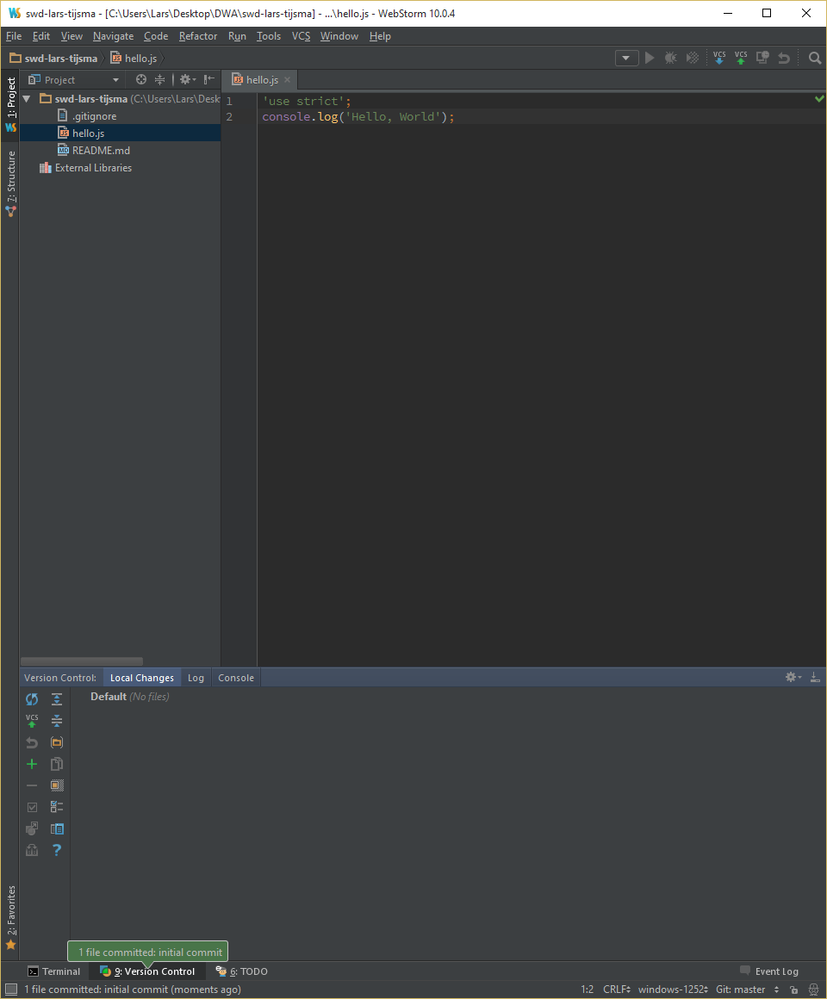